Trang chủ
Trang chủKhi sáng tác một tác phẩm thư pháp chúng ta cần có nhưng kỹ thuật và kỹ xảo. Kỹ xảo là những xảo thuật giúp ta tạo được những đường nét trái thường, hoặc đó là những bí quyết riêng… Kỹ thuật vận bút (Bút pháp) là những kỹ thuật căn bản nhất, phổ biến nhất và quan trọng nhất cho những ai mới làm quen hay tập luyện viết thư pháp.
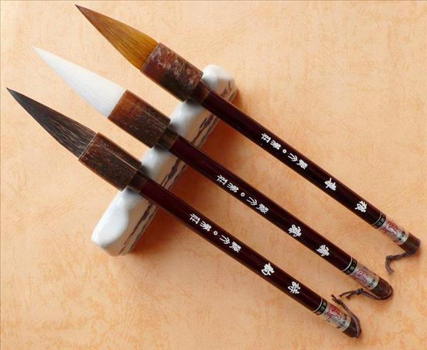Khi tập luyện tập bút pháp giúp ta từng bước làm quen được với cách diều khiển ngọn bút lông và bắt nó thể hiện theo ý mình. Có người không thông qua bút pháp nhưng vẫn viết chữ, khi đó chỉ là viết đại, viết thiếu phương pháp thiếu bài bản, đườnng nét thể hiện có khi đạt khi không vì thiếu nền tảng ban đầu, nét chữ thể hiện sẽ không chắc và mạnh mẽ. Khi viết chữ hoặc vẽ tranh thuỷ mặc đều phải lấy bút lông làm công cụ chính và đường nét là hình thức thể hiện. Khi đưa một nét hoặc chấm một chấm, nhấc bút lên khi nhanh khi chậm, chuyển hướng bút hoặc thu bút…Tất cả những sự biến hoá trong lúc vận bút gọi là bút pháp. Bút pháp trong thư pháp Hán có các kỹ pháp căn bản sau mà theo chúng tôi có thể ứng dụng khi viết thư pháp Việt:
1. Phương Bút: Là phương pháp điều khiển ngọn bút sao cho phần khởi đầu (khởi bút) và kết thúc (thâu bút) của một nét khi di chuyển, tạo nét gấp khúc để lộ ra góccạnh rõ rệt gọi là phương bút. Khi ứng dụng bút pháp phương bút, ngọn bút phải nằm nghiên sử dụng thiên phong hành bút.
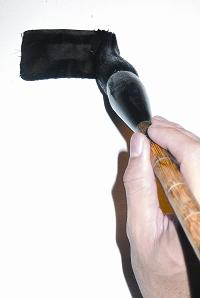Phần khởi đầu của một nét có góc cạnh
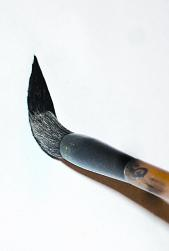Để bút nghiên và chạm vào mặt giấy
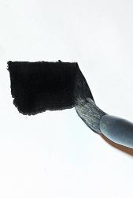
cạnh của ngọn bút tiếp xúc với mặt giấy và kéo sang bên phải

khi kéo sang bên phải có thể nhấc bút lên từ từ tạo một góc nhọn hoặc vẫn để bút nằm ngang tạo góc cạnh khi thâu bút
2. Viên Bút: Kỹ thuật điều khiển ngọn bút sao cho phần khởi bút và thâu bút của một nét có dạng tròn và không tạo ra góc cạnh, Khi sử dụng bút pháp này thì tay phải cầm bút thẳng vuông góc với mặt giấy
Phần khời bút có dạng tròn
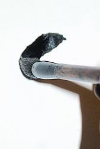Chạm ngọn bút vào mặt giấy và di chuyển bút ngược lại với hướng của nét (hồi bút) tạo một cạnh tròn

Sau đó đưa bút về đúng hướng của nét muốn viết
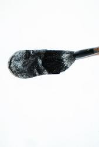Đặt thân bút nằm xuống mặt giấy và cán bút hơi nghiên hướng về phần kết thúc của nét và xòe ngọn bút ra cho vừa bằng với độ rộng của đường tròn vừa tạo Kéo thẳng ngọn bút đến điểm kết thúc.
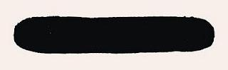Nét cơ bản để luyện tập Viên bút
* Đối với bút pháp viên bút thâu bút thì ta không cần phải dùng kỹ thuật hồi bút, chỉ cần đưa ngọn bút đến điểm kết thúc và ngừng lại, khi đó ta nhấc bút lên, phần bụng bút sẽ tạo cho phần kết thúc của một nét có dạng tròn.
3. Lộ Phong: Là phương pháp điều khiển ngọn bút sao cho phần khời bút và thâu bút để lộ rõ phần nhọn của bút. Ứng dụng nhiều trong các nét móc. (lộ là thể hiện ra, phong nghĩa là ngọn bút)
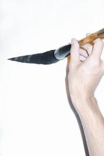Phần khởi bút của một nét có dạng nhọn, Đưa ngọn bút di chuyển theo hướng của nét và chàm từ từ và đều đặn vào mặt giấy sẽ tạo một nét nhọn tự nhiên từ nhỏ đến lớn và ngược lại cho phần thâu bút, rút bút từ từ và đều khỏi mặt giấy.
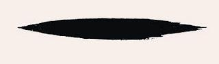Nét cơ bản để luyện tập lộ phong
4. Tàng Phong: Là phương pháp điều khiển ngọn bút sao giấu đi phần nhọn của ngọn bút, khi viết phải hồi bút như viên bút nhưng nét tạo ra không tròn mà hơi có góc cạnh. Đây là Bút pháp khó nhất, khi viết hoàn chỉn nét tàng phong sẽ giống như chữ Nhất của Trung Hoa mà ai muốn kuyện tập thư pháp phải khổ luyện rất lâu. Ứng ụng tàng phong vào những nét sổ nét ngang thì trông nét sẽ đầy đặn mạnh mẽ và uy lực.
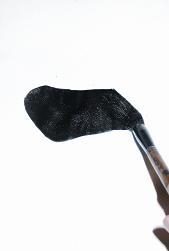Phần khởi bút của nét không để lộ phần nhọn của ngọn bút và tạo ra gó cạnh cho nét đặt ngọn bút chạm nhẹ vào mặt giấy
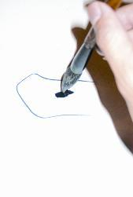Hồi bút theo hướng ngược lại của nét và đưa bút lên cao dùng ngọn bút tạo một cạnh tròn vừa đủ, đừng để cạnh tròn quá dài
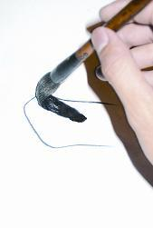Đặt cạnh bút nằm xuống mặt giấy theo hướng xéo và nhấn mạnh, khi đặt cạnh bút nằm xuống, chú ý không rút bút thấp xuống dưới nét
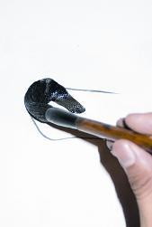Khi đặt cạnh bút nằm xuống mặt giấy và nhấn mạnh thì phần bụng bút sẽ tạo ra một cạnh tròn khác và kéo cạnh bút sang phải, hơi nhấc nhẹ bút cho dễ di chuyển đồng thời tạo phần khởi bút to hơn bần hành bút.
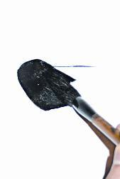kéo cạnh bút sang bên phải
đến điểm thâu bút, nét có thể ngang hoặc có thể hơi gợn cong.
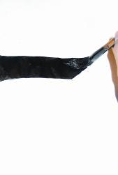Đưa bút đến điểm thâu bút,
giữ cạnh bút nằm xéo tạo một đường xéo phần cuối nét
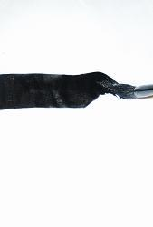Rút cạnh bút đứng lên từ từ và chỉ còn ngọn bút tiếp xúc với mặt giấy, sau đó hối bút xuống dưới và ngược trở lại hướng khởi bút
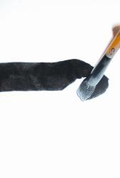Kết thúc nét và tạo phần thâu bút to hơn phần hành bút
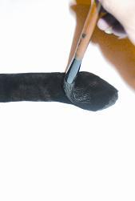Nét cơ bản để tập tàng phong, nét tàng phong có thể ngang theo hình mẫu hoặc hơi gợn cong
5. Trung Phong: Là phương pháp điều khiển bút sao cho đầu ngọn bút khi di chuyển luôn nằm ở vị trí giữa nét, mực toả đều ra hai bên. Lưu ý phải giữ bút ở tư thế đứng mới thực hiện được kỹ pháp này. Trong quá trình viết chữ, có những nét cong nét vòng hoặc nét lượn… cần phải giữ bút đứng, ngọn bút tiếp xúc nhẹ nhành với mặt giấy ở phần ngọn bút nên ta cần ứng dụng và luyện tập trung phong. (Trung là chính giữa)
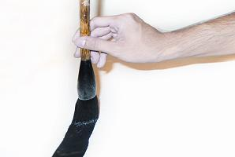Bút vuông góc với mặt giấy
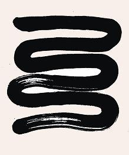Nét cơ bản để luyện trung phong.
*lưu ý, khi luyện tập nét này thì phải dùng viên bút khởi bút, sau đó di chuyển ngọn bút theo chiều ngang và khi chuyển bút xuống dưới cần xoay nhẹ bút.
6. Thiên Phong: Là phương pháp điều khiển bút mà ngọn bút và cán bút được giữ nghiên.Phần cạnh bút sẽ tiếp xúc với mặt giấy để tạo ra đường nét. Nét bút được chia ra làm hai phần, phần được tạo ra từ ngọn bút và phần được tạo từ bụng bút. Cho nên độ mực của hai bên sẽ không đều, bên nhiều bên ít. (thiên nghĩa là nghiên về một bên)

Bút được giữ nghiên và cạnh bút tiếp xúc với mặt giấy.
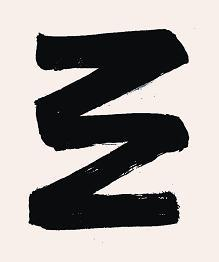Nét cơ bản để luyện tập thiên phong
Chú ý: dùng phương bút khởi bút, giữ cạnh bút tiếp xúc với mặt giấy và thực hiện hết nét đến khi hế mực
7. Đề và Án: Còn được gọi là nhả và nhấn. Đề là nâng ngọn bút lên khi sắp dừng một chữ hoặc chuyển bút sang một nét mới. Án là ấn bút xuống để tạo trọng tâm hoặc do thế bút.
Đề và án là hai hoạt động linh hoạt và liên tục khi vận bút, để tạo nét to nét nhỏ, độ dày mỏng đậm nhạt cho chữ.
8. Chuyển và Chiết: Chuyển là di động ngọn bút trên mặt giấy, khi chuyển bút chỉ chuyển cánh tay, ngón tay cầm bút và cán bút cố định. Bút đang di chuyển phải đổi hướng để tạo thành góc gọi là chiết.
9. Đốn và Tổn: Ngưng bút mà hơi ấn xuống gọi là đốn. Bút đang di chuyển mà hơi ấn xuống gọi là tổn.
10. Xoay bút: Trong khi vận bút di chuyển các ngón tay giữ thân bút sao cho bút xoay nhẹ, kết hợp khi di chuyển bút để tạo nét chấm tròn. Trong trường hợp ngọn bút bị tưa nhẹ ra không nhọn thì ta có thể chuyển hướng và xoay bút sao cho ngọn bút túm lại thật nhọn.
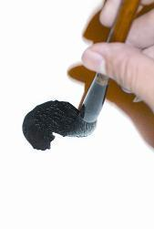 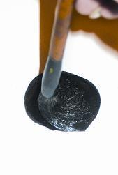11. Liên bút: Là kỹ pháp được dùng nhiều trong phong thể và biến thể, các nét được liên kết với nhau liên tục, đôi khi ta viết một chữ hoặc nhiều chữ chỉ với một nét bút (Một nét bút chỉ được tính là liên kết các ký tự chính trong chữ, phần dấu có thể thêm bởi một nét riêng). Có chữ ta viết luôn cả phần dấu và ký tự chính chỉ với một nét. Khi liên bút kết nối giữa các nét sẽ có những nét thừa ( không phải là nét chính của chữ) nét này phải được viết thật nhỏ không được phép to bằng nét chính.
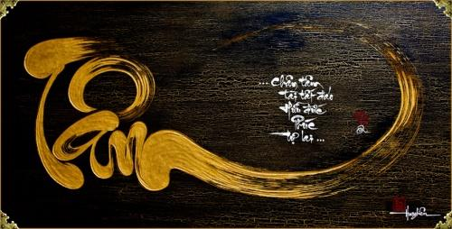Bút pháp là nền tảng để ta sáng tạo chữ viết, không nhất thiết phải ứng dụng tất cả bút pháp vào sáng tác, có thể có những kỹ xảo khác nhưng khi luyện tập hoặc giảng dạy nên luyện tập và hướng dẫn bút pháp cho thật tốt thay vì chỉ tập gạch ngang , gạch dọc và vẽ nét vòng theo như cách nhiều người giảng dạy lâu nay. Những ai đã viết thư pháp, đã có kinh nghiệm nên nghiên cứu bút pháp để hiểu những kỹ thuật mà mình đang viết bởi vì hầu hết chúng ta đều ứng dụng nhưng không biết, đồng thời nên luyện lại những bút pháp mà ta chưa biết hoặc chưa từng xử dụng sẽ giúp chữ ta ngày càng biến hóa và sống động hơn.
Chúc các bạn thành công.
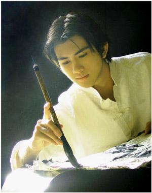Theo (Thư Pháp Gia Đăng Học)
 Trang chủ
Trang chủ You Tube
You Tube Facebook
Facebook Twitter
Twitter